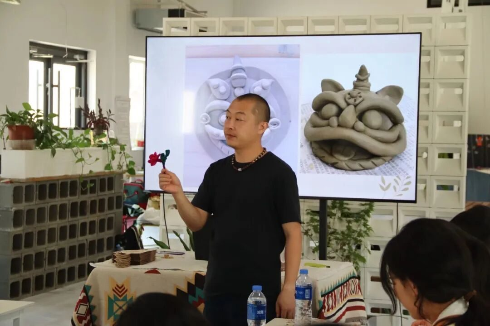
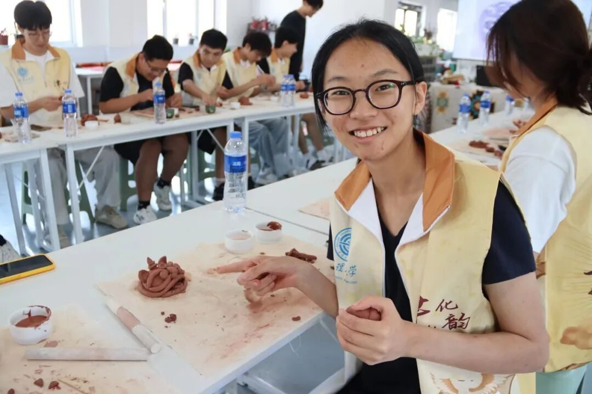
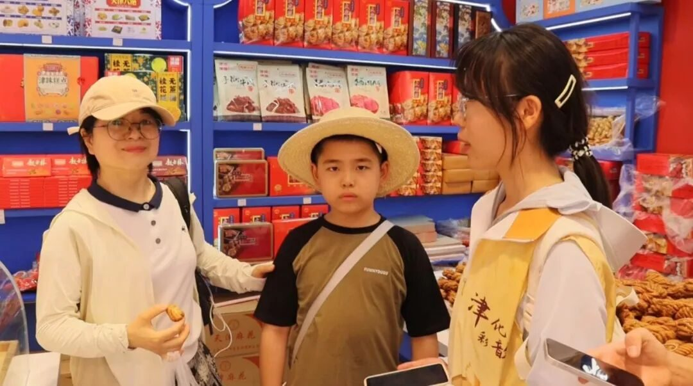
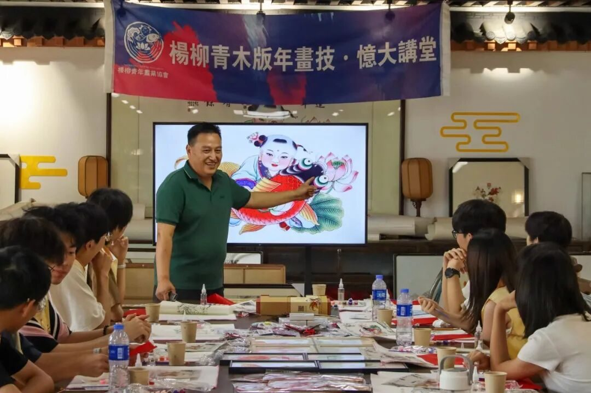
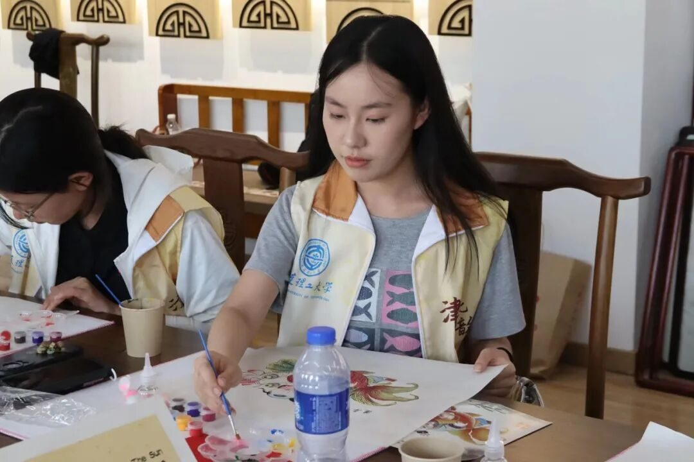
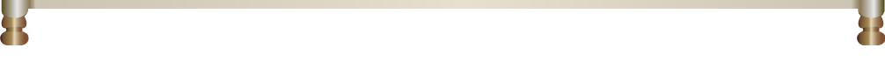
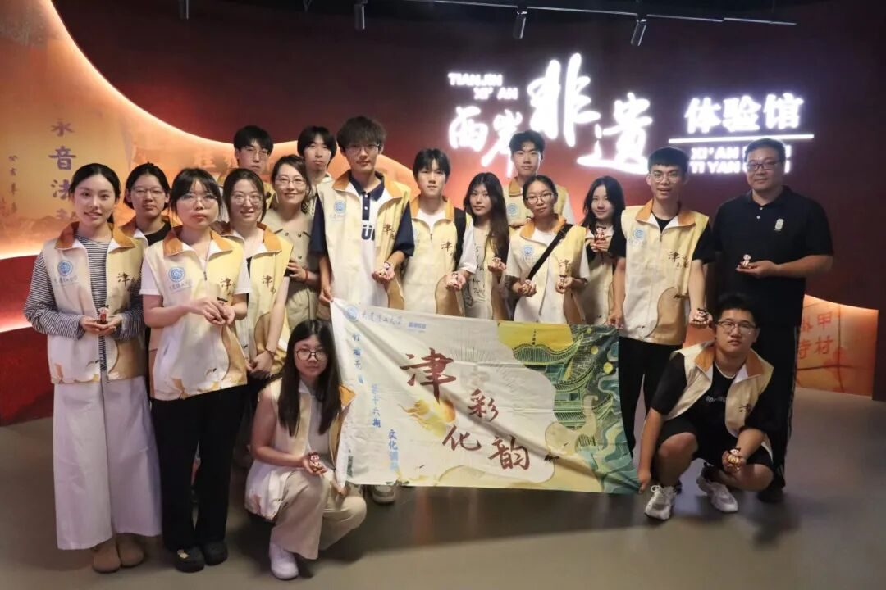
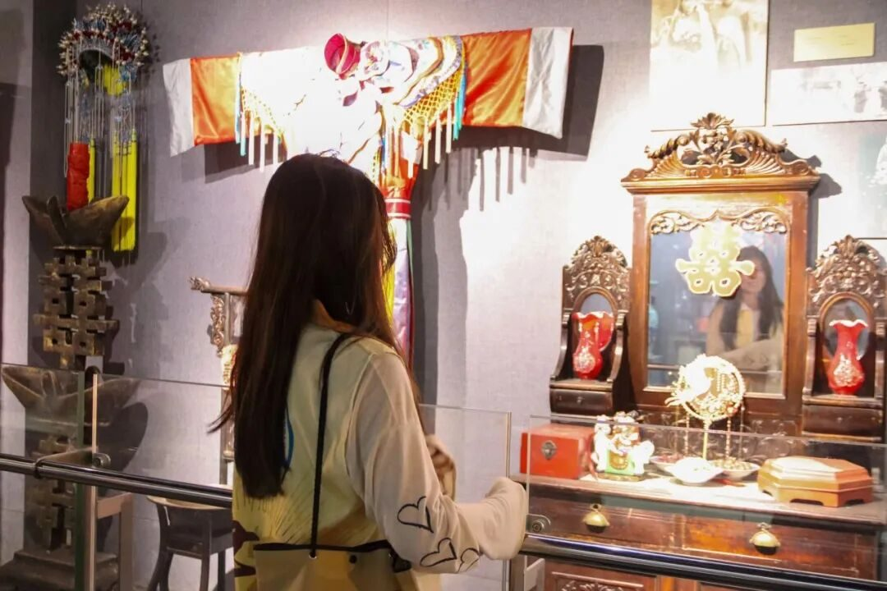
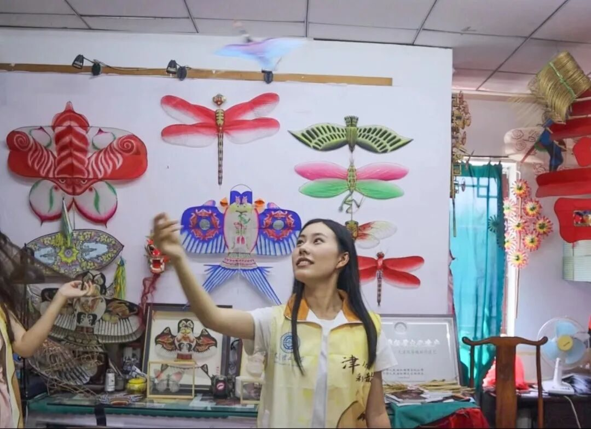
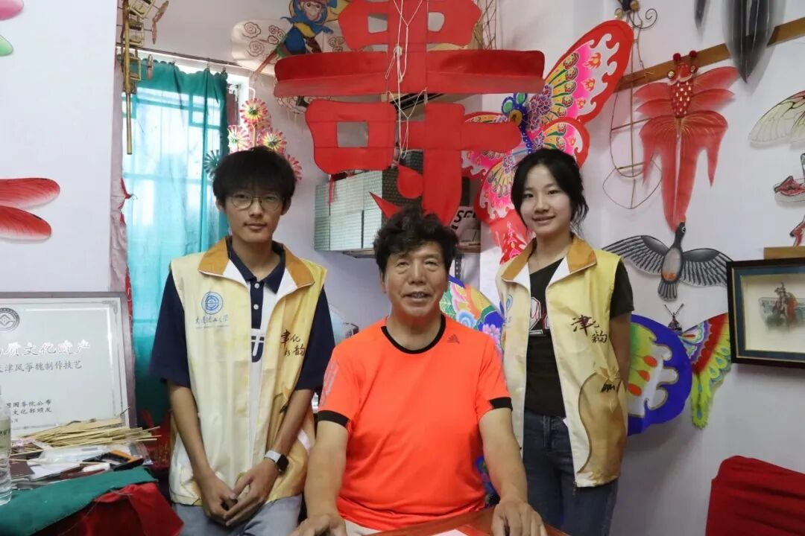

津沽探骊行者路 ，非遗无疆化韵长


津沽探骊行者路
非遗无疆化韵长
Exploring the Essence of Tianjin on a Traveler’s Path
Intangible Heritage Flourishes with Endless Charm

津门之行，让千年的诗意扎根。在为期五天的实践里，行者们深入这座底蕴深厚的沿海城市，通过实地探访、亲身体验与深度交流，全方位感知天津非物质文化遗产的魅力，洞察其保护传承的现状与创新活力。
The trip to Tianjin has rooted the thousand-year-old poetic essence deeply. During the five-day practice, the travelers delved into this coastal city with profound heritage. Through on-site visits, personal experiences, and in-depth exchanges,
they comprehensively perceived the charm of Tianjin’s intangible cultural heritage (ICH) and gained insights into the current status of its preservation, inheritance, and innovative vitality.
滑动查看英文版本~


Day 0

整装蓄势，心向津沽
Preparing for the Journey
Hearts Turned to Tianjin
“凡事预则立”，为保障本次实践顺利推进，行者们行前精心筹备，联络非遗传承名家，用一篇篇深入浅出的文化科普梳理非遗脉络，万事俱备，只待启程。
"Preparation ensures success." To guarantee the smooth progress of this practice, the travelers meticulously prepared in advance: contacting renowned ICH inheritors, sorting out the context of ICH through accessible cultural popularization articles. Everything was ready, awaiting the journey’s start.
滑动查看英文版本~
Day 1
博馆溯源，泥塑承心
Tracing Origins in Museums
Clay Sculptures Inherit the Spirit

第一站，行者们步入天津博物馆，在浩瀚馆藏中追寻津门非遗的历史根脉，从古代器皿到近代民俗，一件件古物勾勒出城市的文化图谱。午后，行者探访王氏泥塑第五代传人王美老师，聆听匠心故事的同时，亲手揉泥塑形，在指尖泥土的生机焕发中，真切触摸非遗的温度与力量。
The first stop was Tianjin Museum. Among the vast collection, the travelers traced the historical roots of Tianjin’s ICH. From ancient utensils to modern folk customs, each artifact outlined the city’s cultural map.
In the afternoon, they visited Ms. Wang Mei, the fifth-generation inheritor of Wang-style clay sculpture. While listening to stories of craftsmanship, they personally kneaded and shaped clay, truly feeling the warmth and power of ICH through the vitality of the clay beneath their fingertips.
滑动查看英文版本~

传国风
品古韵
非遗文化

Day 2
古街寻韵，年画染情
Seeking Charm in Ancient Streets
New Year Paintings Stir Emotions]





滑动查看更多精彩瞬间
伴着此起彼伏的快板声，行者们深入古文化街，分组采访市民游客，以问答串联起民众与“津味非遗”的情感共鸣，感受传承热忱与国际回响。下午，大家赴杨柳青文成阁学习木版年画，在“家家会点染，户户善丹青”的讲述中理解年画与城市的血脉联系，于《连年有余图》的平涂渐变间体味“画中必有戏”的永恒韵味。
Accompanied by the rhythmic sounds of clapper talk, the travelers explored the Ancient Culture Street. They divided into groups to interview citizens and tourists, linking the emotional resonance between the public and "Tianjin-style ICH" through questions and answers, and feeling the passion for inheritance and international recognition.
In the afternoon, they went to Yangliuqing Wencheng Pavilion to learn woodblock New Year paintings. Amidst the story of "every family can paint and every household is skilled in 丹青 (painting)", they understood the blood connection between New Year paintings and the city, and appreciated the eternal charm of "every painting has a story" in the flat coating and gradients of Picture of Abundant Years and Surplus.
滑动查看英文版本~
Day 3
面塑凝巧，民俗润心
Dough Modeling Condenses Ingenuity
Folk Customs Nourish the Heart

怀着崇敬，行者们拜访了津派面塑第四代传人张亚杰老师，了解面塑的历史渊源与技艺精髓，并亲手体验“哪吒”面塑的制作，于细节巧思中感悟日复一日的坚守。下午，行者转至天津民俗博物馆，从生活用具到节庆场景，全方位领略天津民俗的独特风貌，深刻理解其作为民族精神纽带的意义。
With reverence, the travelers visited Mr. Zhang Yajie, the fourth-generation inheritor of Tianjin-style dough modeling. They learned about the historical origins and technical essence of dough modeling, and personally experienced making "Nezha" dough figurines, perceiving the daily persistence through meticulous craftsmanship.
In the afternoon, they went to Tianjin Folk Custom Museum, where they comprehensively admired the unique style of Tianjin’s folk customs from daily utensils to festival scenes, and deeply understood its significance as a bond of national spirit.
滑动查看英文版本~

传国风
品古韵
非遗文化

Day 4
年画解码，烙画创新
Decoding New Year Paintings
Innovating Pyrography

在杨柳青木版年画博物馆，青年传承人何老师与王馆长带领行者深入工作室，细述“勾刻印绘裱”五艺之妙，解读年画作为“历史切片”的深刻内涵。午后，行者们探访太平葫芦特色产业园，在房老师指导下体验葫芦烙画，于电烙笔的“滋滋”声中熔刻个人印记，并采访了第四代传人徐林成老师，深入其带动非遗传承与区域致富的创新之路。
At Yangliuqing Woodblock New Year Painting Museum, young inheritor Mr. He and Director Wang led the travelers into the studio, detailing the wonders of the five techniques—"勾 (outlining), 刻 (carving), 印 (printing), 绘 (painting), 裱 (mounting)"—and interpreting the profound connotation of New Year paintings as "historical slices".
In the afternoon, the travelers visited Taiping Gourd Characteristic Industrial Park. Under Mr. Fang’s guidance, they experienced gourd pyrography, inscribing their personal marks amidst the "sizzle" of electric pyrography pens. They also interviewed Mr. Xu Lincheng, the fourth-generation inheritor, to explore his innovative path of promoting ICH inheritance and regional prosperity.
滑动查看英文版本~

传国风
品古韵
非遗文化

Day 5
纸鸢牵魂，载韵而归
Kites Connect the Soul
Returning with Charm




滑动查看更多精彩瞬间
实践终程，行者们踏访国家级非遗“风筝魏”传承人魏国秋老师，于满室纸鸢间，静听百年传承故事——从魏元泰的创新到四代人的坚守。随后，行者为“太极”风筝上色，并手握筝线“放飞”风筝，在盘旋翻飞的乐趣中感受这份“手作蓝天”非遗瑰宝沉甸甸的分量。
On the final day of practice, the travelers visited Mr. Wei Guoqiu, the inheritor of the national-level ICH "Kite Wei". Amidst a room full of kites, they listened quietly to the century-old inheritance story—from Wei Yuantai’s innovations to the persistence of four generations. Later, the travelers painted "Tai Chi" kites and "flew" them with kite strings. In the joy of 盘旋翻飞 (circling and fluttering), they felt the heavy weight of this ICH treasure "handmade for the blue sky".
滑动查看英文版本~
踏上归途时，檐角的风还在诉说未尽的故事。行囊满载的，不仅是亲制的泥塑、年画、面塑、烙葫芦与风筝，更是一份“让中国非遗走向国际化”的担当与热忱。
行者无疆，或许正因每一步都踏在文化的脉络上，每一眼都望见传统与未来的交辉。
When setting off for home, the wind at the corner of the eaves is still whispering unspoken tales. Our bags are loaded not only with handcrafted clay figurines, New Year paintings, dough models, pyrographed gourds, and kites, but also with a sense of responsibility and passion to "let Chinese intangible cultural heritage go global".
"Boundless is the traveler"—maybe because every step is taken upon the veins of culture, and every gaze catches the interplay of tradition and the future.
滑动查看英文版本~
行者无疆
来源 | 行者无疆实践团
文字 | 韩可欣
图片 | 行者无疆实践团
编辑 | 刘辰锡
审核 | 李凌志 杩健辉 张瑶琪
责编 | 邹靓靓 周 亮